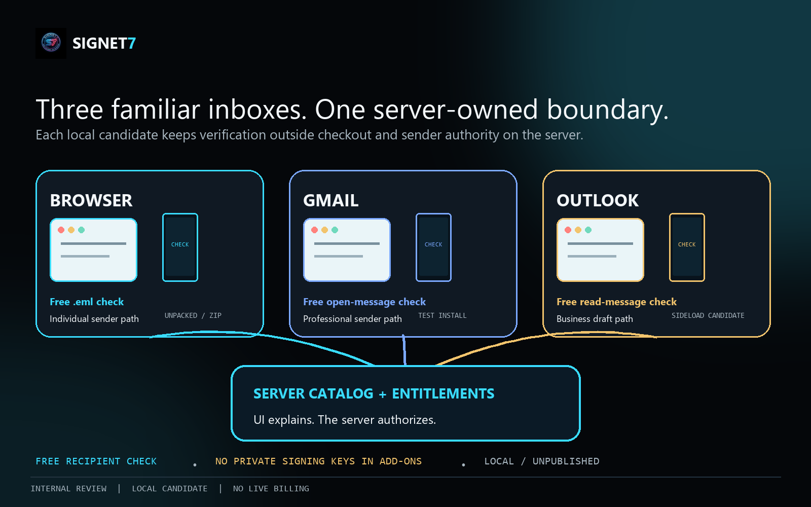

01
Sender-side systems
Applications, provider send paths, mail-transfer systems, and secure-email gateways can prepare covered components and request a signature.
Signet7 is intended to connect the systems that prepare important email, the controls that inspect it, the recipients that need a clear result, and the archives or investigators that need portable evidence later.

Applications, provider send paths, mail-transfer systems, and secure-email gateways can prepare covered components and request a signature.
Gateways, security products, provider workflows, and recipient clients can resolve trust and explain whether covered evidence validates.
Archives, e-discovery, incident response, audit, and case-management systems can retain or inspect exported evidence with controlled trust inputs.
Enterprise identity, key management, DNS, and future VSN services can support enrollment, discovery, rotation, revocation, and administrative status.
Security and platform teams need tenant-scoped policy, sender inventory, lifecycle controls, monitoring, and evidence operations.
AI agents, workflow automation, compliance pipelines, ERP/CRM systems, and enterprise records consumers may use a verified-email result as trusted input before acting. That integration path is secondary to the email product and expands as the email and VSN foundation matures.
| Surface | Current candidate | Email-product boundary |
|---|---|---|
| HTTP API | Tenant-scoped decision, trust, ledger, export, and operational routes | Current request contracts are not a complete MIME or provider integration contract |
| Recipient verifier | HTTP and browser verifier for supported s7-email-1 messages, coverage, status, evidence, and receipts | Useful for controlled evaluation; not a hosted production service or universal mailbox indicator |
| Browser extension | Manifest V3 package for free selected-.eml verification and Individual sender sealing | Unpacked/ZIP local candidate; exact-origin permission and session-only credential; no browser-store publication |
| Gmail add-on | Free received-message verification; Professional sender sealing; optional Enterprise SES dispatch | Apps Script test-install candidate; no Marketplace publication, production compatibility, or endorsement |
| Outlook add-in | Free read-message verification; Business draft sealing and sealed-.eml download | Sideload candidate; no AppSource publication, production compatibility, or endorsement |
| CLI and sender helper | Local signing, evaluation, verification, export, and an SES-oriented sender flow | Useful for controlled evaluation; not a production mailbox plug-in |
| Detached verifier | Evidence verification with independently supplied trust and completeness inputs | Does not prove the source history was complete or the real-world sender identity by itself |
| DNS discovery | Optional Signet7 key-discovery path | Not the complete managed VSN service and not a substitute for enrollment governance |
| MCP / agent tooling | Supporting action-bound decision and demonstration surfaces | The caller must enforce the result; this is not the product center |
s7-email-1 profile for selected headers, text and HTML alternatives, attachments, declared metadata, lifecycle, expiry, replay, and optional evidence recording. Unsupported MIME and provider transformations remain explicit boundaries.Provider and gateway work should begin only after a versioned coverage profile defines how message headers, bodies, MIME parts, attachments, encodings, and allowed transformations are represented and verified.
Signet7 is intended to add explicit sender/key trust, declared protected-content integrity, managed lifecycle, and portable evidence. It should be evaluated alongside—not marketed as an automatic replacement for—transport authentication, gateway controls, encryption, reputation, and user safeguards.
Begin with the exact current contract, the email-MVP gaps, and the verification trust inputs.